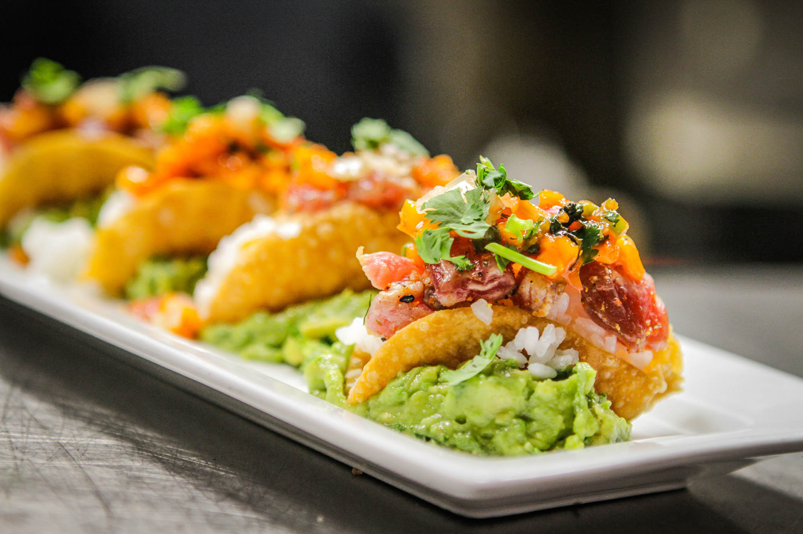
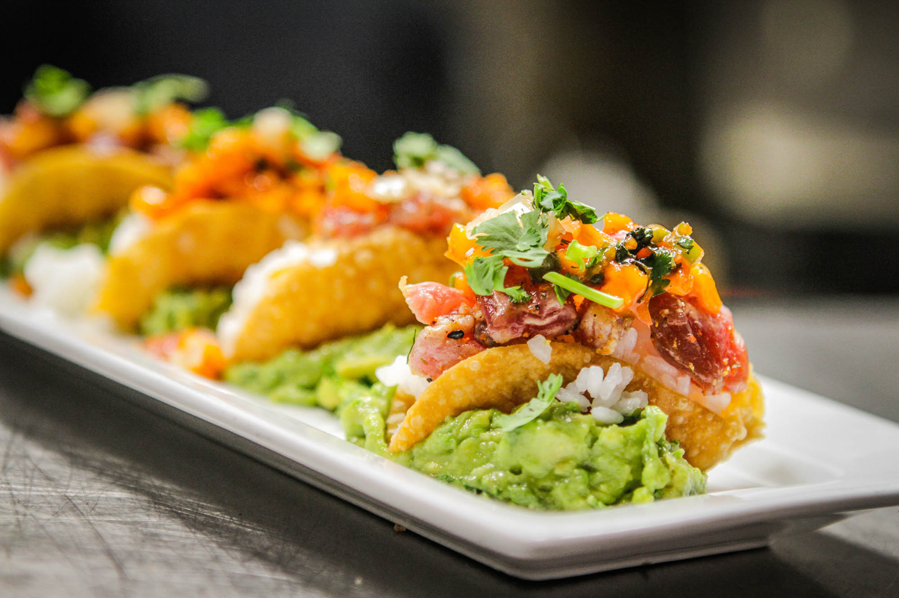

My Story
Growing up in a small coastal town, John was surrounded by the freshest seafood and vibrant local produce. His earliest memories are filled with the aromas of his grandmother's kitchen, where he learned the basics of traditional cooking. This early exposure ignited his passion for the culinary arts.He is known for his innovative approach to cooking, blending traditional techniques with contemporary flair. His dishes are a testament to his creativity, featuring bold flavors and artful presentations. He has a unique ability to transform simple ingredients into extraordinary culinary experiences.Looking ahead, he plans to continue pushing the boundaries of culinary innovation. He is working on a new cookbook that will showcase his signature recipes and culinary techniques. His ultimate goal is to inspire others through his cooking and to make a lasting impact on the culinary world.
 
